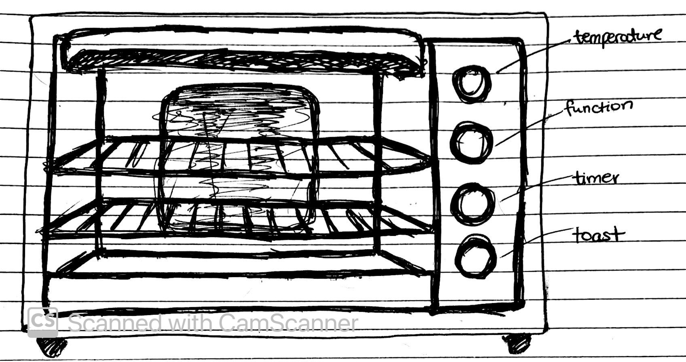
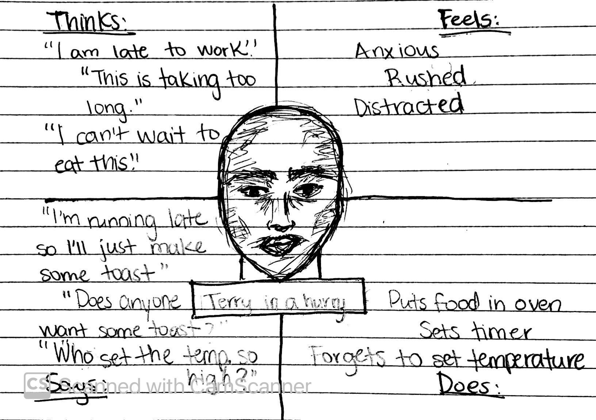
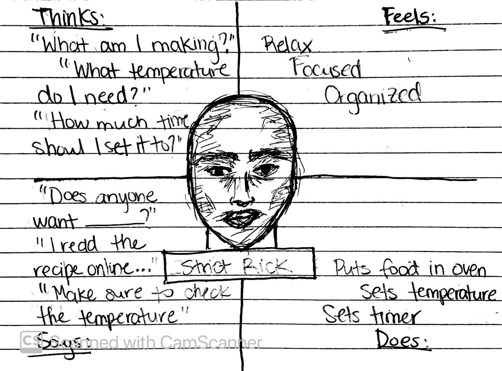

the toaster oven
This interface is used to toast and bake items the size of a chicken or smaller. The user can control the heat, the timer, the function (fan), and the level of toastiness.

~ research ~
In order to understand what personas interact with the selected interface, an interview based on the following questions was conducted.
- What do you usually use this interface for?
Answers & Observations:
User answers included toasting bread, heating up food and roasting veggetables. All these require different settings in order to be prepared.
- On average, how many times a day do you usually engage with this interface?
Answers & Observations:
Every participant usually engages with the oven toaster about 1 to 2 times a day.
- On average, how much time do you spend using it every time you engage with it?
Answers & Observations:
Every participant usually engages with the oven toaster for about 10 minutes every time they use it.
- Please enumerate the steps you take when engaging with this interface.
Answers & Observations:
While most users consistently mentioned placing the food in the oven and setting the timer to a designated time, some mentioned an additional step; checking the temperature setting before setting the timer.
- If you could only have two the buttons, which ones would you choose? (select all that apply)
- temperature
- function
- timer
- toast
Answers & Observations:
All the participants agreed that they would choose the temperature and timer buttons. Some of the participants seemed confused as to what the function and toast button purposes are.
- Which button(s) do you use the least? (select all that apply)
- temperature
- function
- timer
- toast
Answers & Observations:
While most users answered function and toast buttons, some mentioned the temperature button as well. Might this be related to the steps they take when approaching the interface?
- Which button(s) do you use the most? (select all that apply)
- temperature
- function
- timer
- toast
Answers & Observations:
Similar to the previous question's responses, while most people answered temperature and timer, a few mentioned the timer button only.
- How often do you find yourself burning your things?
- never
- not often
- often
- all the time
Answers & Observations:
Parallel to the previous two questions, the users that do not usually engage with the temperature button consistently chose an option other than never while most of the users that did engage with the temperature button chose never.
~ personas ~
Based on observations drawn from the interviews, two potential user archetypes were identified.


~ story time ~
Once upon a time...
...Terry woke up in a hurry...
...he opened the oven door...
...placed a slice, two, three or four...
...he set the timer to ten...
...yet, forgot to check the temperature again...
...oh! what a sad surprise...
...when Terry saw what layed in front of his eyes...